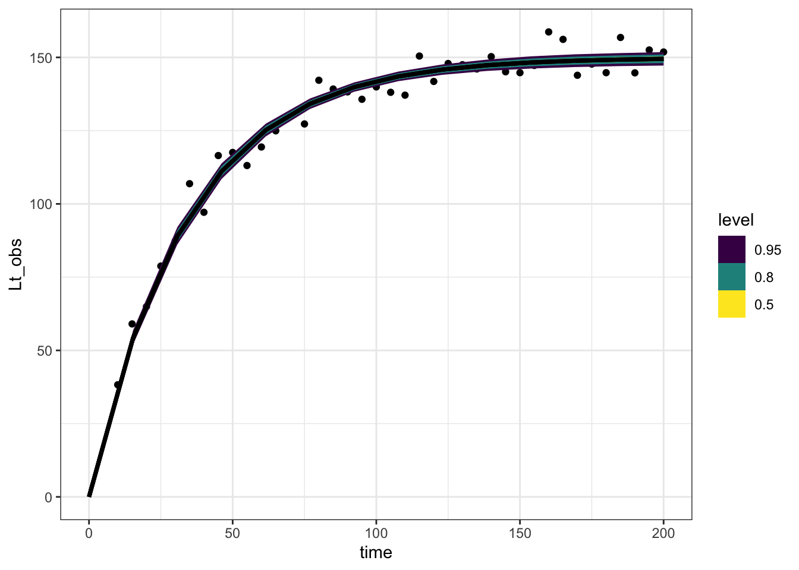

library(targets)
library(ggplot2)
library(tidyverse)
library(tidybayes)
suppressPackageStartupMessages(library(cmdstanr))Many animals and plants grow quickly when small and more slowly as they mature. There are many popular ways of describing this relationship; one very common and convenient relationship is the Von-Bertanalaffy (VB) growth curve:
\[ L_t = L_0e^{-rt} + L_\infty(1 - e^{-rt}) \tag{1}\]
This can also be written as
\[ L_t = L_\infty - (L_\infty - L_0)e^{-rt} \]
This curve has a long tradition in ecology. It can be derived from simple assumptions about how different aspects of metabolism scale with the body size of an organism. I’m not going to derive it here because I don’t want this to be a huge post!
I like this second way of writing the equation because it highlights that the VB equation is a linear transformation of an exponential function. We start out at \(L_0\) and exponentially decay towards \(L_\infty\).
a single tree
I’m going to do a simple simulation of one tree growing. here is code that does that
sim_vb_one_tree <- function(
time = seq(from = 10, to = 200, by = 5),
Lo = .01,
Lmax = 150,
r = .03,
sd = 5){
tibble::tibble(time,
Lt = Lmax - (Lmax - Lo) * exp(-r*time),
Lt_obs = rnorm(length(Lt),
mean = Lt,
sd = 5))
}
vb_one_tree <- sim_vb_one_tree()
vb_one_tree |>
ggplot(aes(x = time, y = Lt_obs)) +
geom_point() +
geom_line(aes(y = Lt)) +
theme_bw()Recover parameters
Here is a stan model that matches this data generating process:
data{
int<lower=0> n;
vector[n] time;
vector[n] Lt;
}
parameters{
real<lower=0> r;
real<lower=0> Lmax;
real<lower=0> sigma_obs;
}
model{
Lt ~ normal(Lmax * (1 - exp(-r*time)), sigma_obs);
r ~ lognormal(-3, 1);
Lmax ~ normal(200, 20);
sigma_obs ~ exponential(1);
}one_tree_sim <- sim_vb_one_tree(
Lmax = 150,
r = .03,
sd = 5)
one_tree_list <- list(n = nrow(one_tree_sim),
time = one_tree_sim$time,
Lt = one_tree_sim$Lt_obs)
one_tree_post <- vb_one_tree$sample(data = one_tree_list,
refresh = 0L,
parallel_chains = 4)Running MCMC with 4 parallel chains...
Chain 1 finished in 0.1 seconds.
Chain 2 finished in 0.1 seconds.
Chain 3 finished in 0.1 seconds.
Chain 4 finished in 0.1 seconds.
All 4 chains finished successfully.
Mean chain execution time: 0.1 seconds.
Total execution time: 0.4 seconds.one_tree_post$summary() |>
knitr::kable()| variable | mean | median | sd | mad | q5 | q95 | rhat | ess_bulk | ess_tail |
|---|---|---|---|---|---|---|---|---|---|
| lp__ | -84.0475862 | -83.7282000 | 1.2654516 | 1.0264040 | -86.4815100 | -82.6899900 | 1.002211 | 1726.271 | 2253.937 |
| r | 0.0293271 | 0.0292921 | 0.0010091 | 0.0009937 | 0.0277237 | 0.0310195 | 1.002767 | 2022.287 | 2140.461 |
| Lmax | 149.9431923 | 149.9170000 | 1.2118152 | 1.1979408 | 147.9899500 | 151.9602000 | 1.002967 | 2163.288 | 2291.239 |
| sigma_obs | 4.7191941 | 4.6703850 | 0.5231559 | 0.5085615 | 3.9512310 | 5.6504515 | 1.000848 | 2331.954 | 2412.225 |
These posterior intervals cover the numbers used to make up the data pretty well! Let’s look at the model predictions on a figure:
expected_df <- one_tree_post |>
spread_rvars(Lmax, r) |>
expand_grid(time = seq(0, 200, length.out = 14)) |>
mutate(Lt = Lmax * (1 - exp(-r * time)))
expected_plot <- expected_df |>
ggplot(aes(x = time, ydist = Lt)) +
stat_dist_lineribbon()
expected_plot
This relationship shows the average line, the expected size of the tree. We can add the original data like this:
one_tree_sim |>
ggplot(aes(x = time, y = Lt_obs)) +
geom_point() +
stat_dist_lineribbon(aes(x = time, dist = Lt),
data = expected_df, inherit.aes = FALSE) +
theme_bw()
At the time of this writing the error messages here are particularly unhelpful. If you try to use stat_lineribbon rather than stat_dist_lineribbon you get the following misleading message:
one_tree_sim |>
ggplot(aes(x = time, y = Lt_obs)) +
geom_point() +
stat_lineribbon(aes(x = time, y = Lt),
data = expected_df, inherit.aes = FALSE)Error: Discrete value supplied to continuous scaleAdding measurement error
The above model reproduces predictions of the original line, but ignores measurement error. Here’s a few ways to add that into this same approach:
Simulating observations in R
One way to do this is after the fact, using the handy tidyverse dplyr::rowwise() syntax, combined with posterior::rfun(). The latter function transforms rnorm into a function that both takes and produces an rvar, the specialized format for working with posterior draws. The latter function makes sure we redo this for every row of our dataframe.
expected_df <- one_tree_post |>
spread_rvars(Lmax, r, sigma_obs) |>
expand_grid(time = seq(0, 200, length.out = 14)) |>
mutate(Lt = Lmax * (1 - exp(-r * time))) |>
rowwise() |>
mutate(Lt_obs = posterior::rfun(rnorm)(n = 1, mean = Lt, sd = sigma_obs))
expected_df |>
ggplot(aes(x = time, dist = Lt_obs)) +
stat_lineribbon() +
scale_fill_brewer(palette = "Greens") +
geom_point(aes(y = Lt_obs), data = one_tree_sim,
pch = 21, fill = "darkorange") +
theme_bw()
This has the advantage of happening all in R, keeping our posterior distribution slim.
However sometimes it can be both convenient and more readable to keep the whole process inside Stan, and here’s how:
Posterior predictive simulations in Stan
vb_one_tree_gq <- cmdstan_model(
stan_file = here::here(
"posts/2022-10-14-growth_curve_measurement_error/vb_one_tree_gq.stan"))
vb_one_tree_gqdata{
int<lower=0> n;
vector[n] time;
vector[n] Lt;
int<lower=0> n_new;
vector[n_new] time_new;
}
parameters{
real<lower=0> r;
real<lower=0> Lmax;
real<lower=0> sigma_obs;
}
model{
Lt ~ normal(Lmax * (1 - exp(-r*time)), sigma_obs);
r ~ lognormal(-3, 1);
Lmax ~ normal(200, 20);
sigma_obs ~ exponential(1);
}
generated quantities{
vector[n_new] Lt_predicted;
for (i in 1:n_new){
Lt_predicted[i] = normal_rng(Lmax * (1 - exp(-r*time_new[i])), sigma_obs);
}
}one_tree_predictions <- vb_one_tree_gq$sample(
data = purrr::splice(one_tree_list,
time_new = seq(0, 200, length.out = 14),
n_new = 14),
refresh = 0L,
parallel_chains = 4)Running MCMC with 4 parallel chains...
Chain 1 finished in 0.3 seconds.
Chain 2 finished in 0.3 seconds.
Chain 3 finished in 0.3 seconds.
Chain 4 finished in 0.2 seconds.
All 4 chains finished successfully.
Mean chain execution time: 0.3 seconds.
Total execution time: 0.4 seconds.one_tree_predictions |>
spread_rvars(Lt_predicted[i]) |>
mutate(time_new = seq(0, 200, length.out = 14)) |>
ggplot(aes(x = time_new, dist = Lt_predicted)) +
stat_lineribbon() +
scale_fill_brewer(palette = "Greens") +
geom_point(aes(x = time, y = Lt_obs),
inherit.aes = FALSE,
data = one_tree_sim,
pch = 21, fill = "darkorange") +
theme_bw()